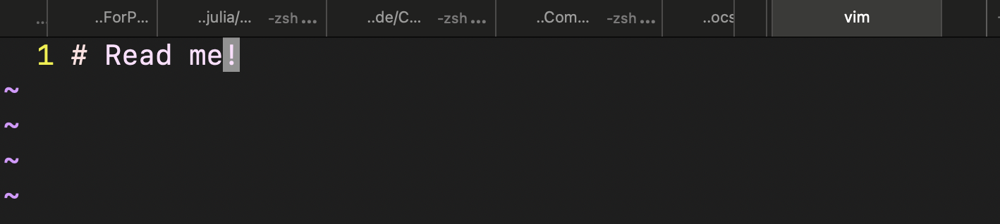

Get a Terminal!
You need to get a working terminal to follow the instructions in this book, because every cool guy needs a terminal.
Linux operating system
Using Linux or macOS is the most straight-forward way to get a terminal. Just like Windows, IOS, and macOS, Linux is an operating system. In fact, Android, one of the most popular platforms on the planet, is powered by the Linux operating system. It is free to use, open source, widely used on clusters and good at automating your works. Linux kernel and Linux distribution are different concepts.
- The Linux kernel is started by Linus Torvalds in 1991.
- A Linux distribution is an operating system made from a software collection that includes the Linux kernel and, often, a package management system.
The Linux distribution used in this course is Ubuntu. If you want to stick to Windows, you can use Windows Subsystem for Linux (WSL) to get a Linux terminal.
Shell (or Terminal)
Although you can use a graphical user interface (GUI) to interact with your Linux distribution, you will find that the command line interface (CLI) is more efficient and powerful. The CLI is also known as the shell or terminal.
The shell is a program that takes commands from the keyboard and gives them to the operating system to perform. Zsh and Bash are two popular shell interpreters used in the Linux operating systems.
- Bash is the default shell on most Linux distributions.
- Zsh (with oh-my-zsh extension) is an extended version of the shell, with a more powerful command-line editing and completion system. It includes features like spelling correction and tab-completion, and it also supports plugins and themes.
In Ubuntu, one can use Ctrl + Alt + T to open a shell. In a shell, we use
man command_nameto get help information related to a command,CTRL-Cto break a program andCTRL-Dto exit a shell.
To learn more about shell, please check:
The following is a short list of bash commands that will be used frequently in this book.
man # an interface to the system reference manuals
ls # list directory contents
cd # change directory
mkdir # make directories
rm # remove files or directories
pwd # print name of current/working directory
echo # display a line of text
cat # concatenate files and print on the standard output
alias # create an alias for a command
lscpu # display information about the CPU architecture
lsmem # list the ranges of available memory with their online status
top # display Linux processes
ssh # the OpenSSH remote login client
vim # Vi IMproved, a programmer's text editor
git # the stupid content tracker
tar # an archiving utilityEditor in terminal - Vim
To edit files in the terminal, you can use Vim - the default text editor in most Linux distributions. Vim has three primary modes, each tailored for specific tasks. The primary modes include
- Normal Mode, where users can navigate through the file and perform tasks like deleting lines or copying text; One can enter the normal mode by typing
ESC; - Insert Mode, where users can insert text as in conventional text editors; One can enter the insert mode by typing
iin the normal mode; - Command Mode, where users input commands for tasks like saving files or searching; One can enter the command mode by typing
:in the normal mode.
A few commands are listed below to get you started with Vim.
i # input
:w # write
:q # quit
:q! # force quit without saving
u # undo
CTRL-R # redoAll the commands must be executed in the normal mode (press ESC if not). To learn more about Vim, please check this lecture.
Connect to the remote - SSH
The Secure Shell (SSH) protocol is a method for securely sending commands to a computer over an unsecured network. SSH uses cryptography to authenticate and encrypt connections between devices. It is widely used to:
- push code to a remote git repository,
- log into a remote machine and execute commands.
Consider you want to access a remote machine, e.g. the cluster of your university. You will be given a host name and a username. You can use the following command to log in to the remote machine.
ssh <username>@<hostname>where <username> is the user's account name and <hostname> is the host name or IP of the target machine. You will get logged in after inputting the password.
Tips to make your life easier
It will be tedious to type the host name and user name everytime you want to login to the remote machine. You can setup the ~/.ssh/config file to make your life easier. The following is an example of the ~/.ssh/config file.
Host amat5315
HostName <hostname>
User <username>where amat5315 is the alias of the host. After setting up the ~/.ssh/config, you can login to the remote machine by typing
ssh amat5315If you want to avoid typing the password everytime you login, you can use the command
ssh-keygento generate a pair of public and private keys, which will be stored in the ~/.ssh folder on the local machine. After setting up the keys, you can copy the public key to the remote machine by typing
ssh-copy-id amat5315Try connecting to the remote machine again, you will find that you don't need to type the password anymore.
The SSH key pair is a pair of asymmetric keys, one is the public key and the other is the private key. In the above example, the public key is uploaded to the remote machine and the private key is stored on the local machine. The public key can be shared with anyone, but the private key must be kept secret.
To connect to a server, the server needs to know that you are the one who with the right to access it. To do so, the server will need to check if you have the private key that corresponds to the public key stored on the server. If you have the private key, you will be granted access to the server.
The secret of the SSH key pair is that the public key can be used to encrypt a message that can only be decrypted by the private key, i.e. the public key is more like a lock and the private key is the key to unlock the lock. This is the foundation of the SSH protocol. So server can send you a message encrypted by your public key, and only you can decrypt it with your private key. This is how the server knows that you are the one who has the private key without actually sending the private key to the server.
Practice
In the following example, we will use the ssh command to connect to the remote machine gpu and do some basic operations. If you don't have a remote machine, you can use your local machine to do the following operations.
(base) ➜ ~ ssh gpu
Welcome to Ubuntu 22.04.3 LTS (GNU/Linux 5.15.0-91-generic x86_64)
...
*** System restart required ***
Last login: Tue Mar 5 06:20:05 2024 from 10.13.139.204
(base) ➜ ~Then we switch to the jcode directory and create a directory test and a file README.md in the directory.
(base) ➜ ~ ls # list directory contents
ClusterManagement jcode packages
ScientificComputingForPhysicists miniconda3 software
(base) ➜ ~ cd jcode # change directory
(base) ➜ jcode mkdir test # make directories
(base) ➜ jcode cd test # change directory
(base) ➜ test vim README.md # create a file and edit itYou will see the following screen after typing vim README.md.  Type i to enter the insert mode and type some text, e.g. "# Read me!". Then type ESC to enter the normal mode and type :wq to save and quit the file.
After returning to the terminal, you can type ls -l to check the file you just created.
total 4
-rw-rw-r-- 1 jinguoliu jinguoliu 11 Mar 5 06:30 README.mdYou can also use the cat command to check the content of the file.
(base) ➜ test cat README.md
# Read me!Finally, you can press CTRL-D to exit the shell.
Enjoy your journey in the terminal!